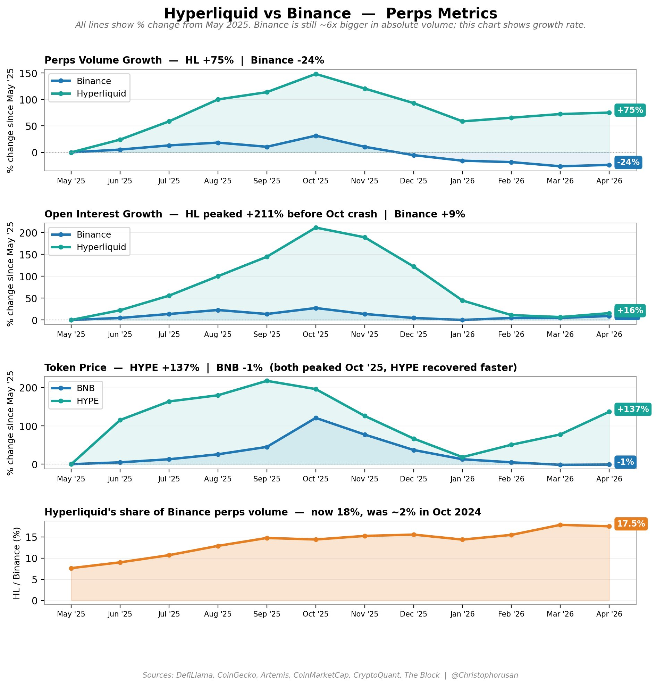
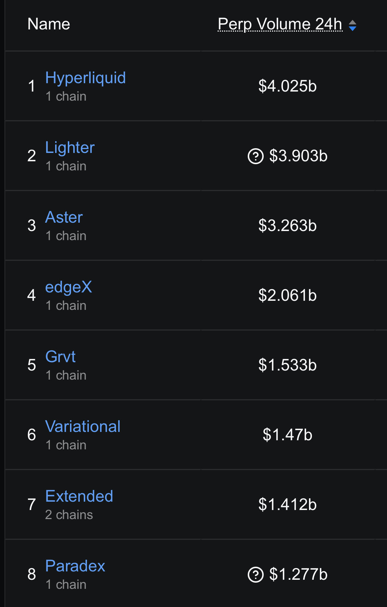
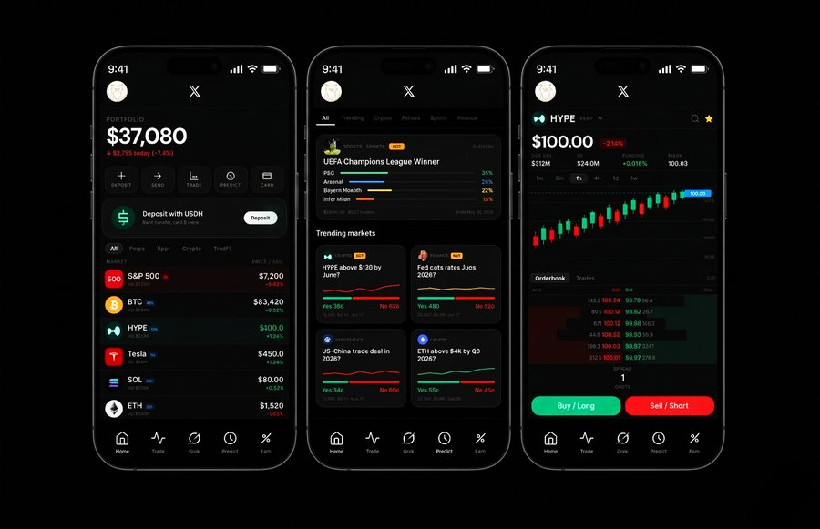

PURR Launch
Launch work for an early Hyperliquid ecosystem moment.
Open original
Hyperliquid
18 June, 2026
Work around Hyperliquid: launch campaigns, product imagination, market interfaces, and ecosystem distribution.
Launch
The HYPE TGE work was built for a crypto-native audience: simple, fast, shareable, and designed to turn a protocol moment into something people could remember.
Product Direction
A concept for where Hyperliquid can go next: P2P challenges, social payments, spendable PnL, spot, perps, borrowing, and yield in one coherent consumer surface.
Other Work
The broader ecosystem work includes early PURR launch distribution, market analysis, futures.xyz, and concepts for bringing trading into social surfaces.

HYPE vs Binance
Market structure and exchange positioning analysis around Hyperliquid.
Open original

Lighter to HYPE
Allocation logic and market conviction.
Open original
futures.xyz
Hyperliquid and HyperEVM all-in-one terminal concept.
Open project

X x Hyperliquid
Consumer distribution idea for trading inside social surfaces.
Open original